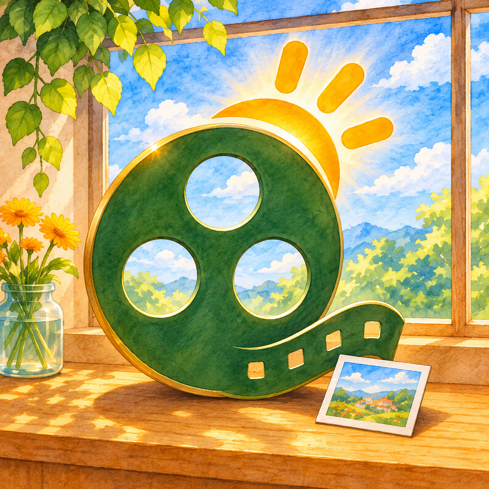

INDEPENDENT APPS BY WHITEFEL
A little creativity.
A little more space.
Thoughtful tools for the things you love making,
and the everyday things you want to make easier.
Explore the apps
The collection
Two apps. Different kinds of possibility.

Little Reel
Video editing for iPhone
COMING TO THE APP STORE
Your moments.
A little movie.
Give your photos and videos a story of their own. Trim a moment, slow it down, find a new frame, and bring it all together.
One-time purchase. No ads. Price to be announced.
MAKE SOMETHING WORTH KEEPINGA little edit. A new perspective.
Mac Sweeper
macOSA cleaner goodbye
to old apps.
Find the caches, preferences, and support files an app leaves behind. Review the list, then move them to the Trash.
App leftovers
A little room to breathe.A HOME FOR SMALL IDEAS
Different tools.
The same attention to detail.
WhiteFel brings together independent apps for creativity and everyday use. Explore each app, find a little help when you need it, and see what comes next.
A LITTLE HELP
Let’s get you unstuck.
Find answers for your app, or get in touch directly.
felderkwek@gmail.com A little edit. A new perspective.
A little edit. A new perspective.